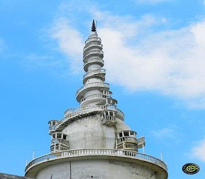
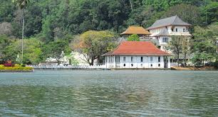

Kandy
Dalanda Maligawa

The Temple of Tooth at kandy is the final location of the sacred tooth of the lord Buddha which was brought to srilanka during the reign of king “keerthi sri Megawarna” by prince “Dantha” and Princess “Hemamala” from the kindom of kalingu India. It became the palladium of srilankan kings and was preciously guarded in a special shrine built within precincts of royal palace where the capital was located. The Temple of the Tooth Relic of Lord Buddha, sri dalada Maligawa is in the centre of the city, the highest venerated religious place with steeped in cultural heritage attracting the highest respect of the Buddhists as well as the other religions all over the world. The beautiful magnificent temple was built by late king Vimaladharmasooriya 1st in 1592 AD. The Relic Shrine is approached by a large draw-bridge over the moat and through a beautifully decorated frontispiece. A tunnel” ambarawa”, leads to the main shrine complex, having a central courtyard surrounded by storied structures. The two-storied open pillared hall in front constitutes the area where visitors and devotees gather. The lower hall has its central part set apart for the beating of drums and other forms of traditional music performed during ritual service hours. On either side are the Pallemale Vihara constructed by king Kirti Sri Rajasimha and the Octagon (Pattirippuva) built by the last king, Sri Vikrama Rajasimha on one side and the small “stupa” supposed to contain the Bowl Relic of the Buddha on the other. The storied structures to the right and left of the shrine, constitute the residence quarters of the monks engaged during daily service (Tevava), the conference hall, the Library and the Office of the Diyawadana Nilame.The recognition of the sacred temple it has been declared kandy as a world heritage city by UNESCO. Ven.Monks of the two chapters of Malwattu and Asgiriya conduct daily worships in the inner chamber of the temple. Rituals are performing 3 times daily at dawn, at noon and in the evening. On Wednesdays, there is a symbolic bathing of the sacred relic with an herbal preparation from scented water and fragrant flowers called “Nanumura Mangalya”.
Ambuluwawa
Some millions of years ago Sri Lanka was a part of the Indian peninsula and was connected to Godwanaland. Later it was pushed away towards north as an island. According to the Rama-Ravana legend Talaimannar strait is the location where Hanuma built his bridge to connect Sri Lanka with South India . This was the place which connected Sri Lanka with India from time to time. Sri Lanka lost this geographical connection some thousands of years ago but it has resulted in creating a rich biodiversity here comprising a large population of fauna and flora. Sri Lanka is considered to be the country in Asia which has the richest biodiversity in a single area. Biodiversity in this country spreads through a wider range of area as a result of its inter relationship with Indian peninsula. Significance of living beings, variety of forests and the natural freshness of the soil have created the bio land environment inherited to Sri Lanka and the mid country hills occupy a significant place in the fonnation of biodiversity. There are planes in the South-west area.
Knuckles
.jpg)
The Public Enterprise and Kandy City Development Ministry yesterday said the report of the team of auditors sent to the Knuckles Mountain Range had revealed that the lands demarcated for the proposed-projects were outside the rock boundary of the mountain range. Ministry Secretary Ravindra Hewavitharana told the Daily Mirror that they had sent a team of auditors last week to inquire into the alleged transfer of 21,000 acres of land in the Knuckles Mountain Range to close associates of government ministers. He said the report had also revealed that there had been nothing proposed to establish within the Knuckles Mountain Range as per the auditors findings followed by several investigations. “The auditors were accompanied by officials of the Department of Forest Conservation, Grama Niladharis, Superintendents and officials of the related companies and residents of the area. The team has reached the site with the coordination of Global Positioning System (GPS),” he said. “The eco-tourist project which is proposed to be established in this area is outside the rock boundary of the mountain range. We will make more considerations since it is a high environmentally sensitive area,” he added. He said the report of the team of auditors would be sent to Minister Lakshman Kiriella in the coming days. Earlier, the Movement for Land and Agriculture Reform (MONLAR) claimed that these lands which were managed by State Plantations Corporation and Elkaduwa Plantation Limited had been given to close associates and relatives of two powerful ministers.
Nuwara wewa
The beautiful lake in front of the Temple of the Tooth was formerly a stretch of paddy fields known as Tigolwela. It was converted to a lake by King Sri Wickrama Rajasinha in 1807. As there had been a beautiful pond named 'Kiri-muhuda' (a 'sea of milk') in the middle of the Tigolwela, the lake constructed subsequently too was named, 'Kiri-muhuda'. Deveda Moolacharya is considered the architect of the Kandy Lake. The king first built a dam across the paddy fields, starting from the Pattiruppuwa (Octogen) side, where the steps leading into the lake by the Mahamaluwa (Esplanade) are still visible, stretching across to the Poya-maluwa. The dam, upon which a roadway was constructed, allowed the king to go across to the Malwatte Vihare. According to D’Oyley, the dam was constructed between 1810–1812.
peradeniya flower garden
.jpg)
Peradeniya Botanic Gardens, botanical garden in Peradeniya, near Kandy, Sri Lanka, noted for its rich and varied collections of tropical woody plants. Occupying 59 hectares (146 acres), it has about 4,000 species of plants. The most important specimens of the garden include palms, some of which are planted in impressive avenues. Significant, too, are the collections of orchids, gymnosperms, and flowering trees. The gardens were founded in 1821 primarily to introduce coffee trees and various other tropical plants of economic importance to the region. Even after it took on a more botanical emphasis in the 1840s, the garden remained a centre for horticultural activities. Under the directorship of the botanist George H.K. Thwaites, the garden played a pivotal role in establishing the country’s flourishing tea industry in the late 1870s. Thwaites also brought in and cultivated the Brazilian rubber tree, which became a crop producer vital to Sri Lanka’s economy. The botanical collection has developed into one of the finest in the region.